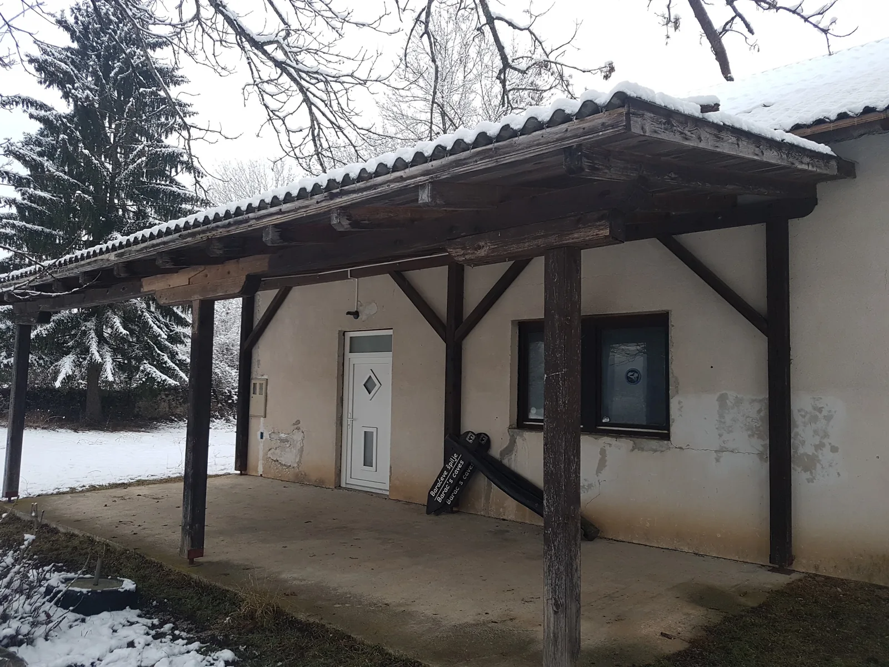

Čudna šuma
Kada po šumi umjesto srna ili medvjeda susrećeš razne natpise, trakice, neorijentirane policajce i svašta nešto - jedna pjesmica ti odmah padne na pamet...

Dođe tako vrijeme kada počnu svrbjeti tabani, ruksaci se zažele ramena, a gojzerice puta.
Nisam siguran da li je baš ovo neki najbolji uvod u priču, ali dok pišem u ovo gluho doba noći jedini je koji mi pada na pamet. Uglavnom, to gornje utjecalo je na odluku da se ide na izlet - pod razno. Valjalo je samo nekako odabrati prigodno mjesto i pripadajući razlog. A potonji se pronašao u prikupljanju podataka o povijesti istraživanja špiljskog sustava Panjkov ponor-Varićakova špilja (ili još znana kao Muškinja ili Kršlja). Dodatno je pojačan time da je od zadnjeg puta i zadnjeg značajnog istraživanja Panjkovog u kojem sam učestvovao prošlo osam godina. Ondašnje otkriće novih i prekrasnih 1.300 metara ovog sustava, osim dubokog dojma težine pothvata i otkrivene špiljske ljepote, ostavilo je i koju (još uvijek) neispunjenu speleološku želju kao temelj razlogu da se vraćamo.
Odaziv na ovaj izlet neslavno je pao nauštrb skijaških i inih izleta, tako da smo na njega krenuli samo Beata i ja. Nakon odležane gripe koja nas je mučki sastavila na Staru godinu i sveukupno držala desetak dana, sada nije bilo teorije da se ne izvučemo u prirodu, pa makar nas opet sastavila. Nije smetao ni snijeg koji je napadao noć prije. Štoviše, još je i dobro došao jer se potencijalni otvori u zemlji lakše vide – ako imamo sreće da cirkulacija špiljskog zraka teče u pravom smjeru. Za razliku od tipičnih velebitaških ruksaka punih hrane za troje ljudi, otputili smo se spartanski; sa dva sendviča, termosicom čaja i bocom vode. Isprintali kartu, nacrt, uzeli kompas, napunili mobitele i baterije i „vozi Miško“. Plan je napraviti preliminarno rekognisciranje- snimiti teren, posjetiti špilju i nenatrčati na migrante. Zbog najave novih padalina, dron je ispao iz kombinacije, a ruksak je u zamjenu popunjen sa par fleševa.
U Novu kršlju stigli smo nešto prije jedanaest. Sve je bijelo već od Karlovca, ovdje snijega ima desetak centimetara, možda i malo više. U prolazu bacamo pogled prema „Prvom hrvatskom speleološkom domu“, poznatoj kući i nadstrešnici na kojoj više nema tog natpisa. Nema ni kuće pokraj –lovačkog doma- kojeg su porušili do zadnje cigle i otpeljali negdje na smetlište. I jedna i druga kuća žrtve su politike i nekakvih šuškavih interesa zvanih „europski fondovi“ u kojoj su na kraju nadrapali speleolozi jer su izgubili mjesto za smještaj u istraživanjima na ovom području.
[caption id="attachment_2214" align="alignnone" width="2232"] Prvi hrvatski speleološki dom. Danas nažalost bivši.[/caption]Uz evociranje uspomena produžujemo putem, a malo dalje na šumskoj cesti susrećemo prvi auto. Na nizbrdici idemo u rikverc kako bi ga propustili, a u njemu poznata brada i lik koji je nosi. Znamo ga od prije, to je pustinjak kojemu je život u Zagrebu došao navrh glave i preselio se na livadu u Novoj Kršlji, na kojoj je od svega i svačega napravio sklepanu kuću u kojoj danas živi. Za sve one kojima kao takav ide na živce, napisao je nekoliko velikih obavijesti na uočljivom mjestu uz cestu. Nekako sam zaključio da što sam stariji i što je grad više napučeniji i otuđeniji, kako sve više shvaćam takve preokrete u životu. Ostavljamo njegov dom iza nas, vozimo se dalje. Putem viđamo neke nove kuće, ali i one stare drvene, napuštene i prazne. Neke su, vidi se, prilično lijepe i u ovakvom stanju. Nije teško zamisliti kakve su bile nekada u punom sjaju.
Ubrzo iza jedne takve dolazimo na križanje gdje se široki put račva na dva manja šumska, nalazimo pogodno mjesto za parkiranje i opremanje. Nakon pojedene polovice sendviča i par šalica čaja spremni smo za pokret. Prvi plan je odlazak u Varićakovu špilju jer smo joj blizu. Koristimo samo kartu, ručni kompas i dan prije instaliranu zgodnu aplikacijicu na mobitelu „Geotracker“. Ona će nam reći koliko i kuda smo prošli. Vrijeme oblačno, ali po svjetlini okolo čini se da nije debeli sloj. Možda se pojavi i sunce. Hodamo putem i povremeno računamo metre. Usput uočavamo da na svakih 10-15 metara sa grana visi plastična crveno bijela trakica, one kakve stavljaju oko mjesta gdje se izvode radovi. Boje su apšisane, očito tu vise već koju godinu. U jednom trenutku smo s puta skrenuli ranije nego je trebalo, otišli na krivu stranu padine, srećom ne previše. Ubrzo smo se našli u pravoj vrtači i pred ulazom u špilju. Na ulazu zatičemo pripremljene baklje i plastičnu kanticu sa uljem. Hm...
Radimo kratak predah, fotkamo to, zatim vadimo kacige i idemo unutra ne ostavljajući ruksake vani. Koristimo se nacrtom koji su izradili Mihovilci Teo i Vjetar, kad već u prvoj dvorani neugodno iznenađenje. Drveni vojni sanduci SMB boje (kratica: Sivo-Maslinasta-Boja), ispisani ćirilicom i latinicom koji nam govore da su unutra 105 mm granate za haubicu istoga kalibra. Srećom, prazni su. Neki su razbijeni, dijelom posloženi u krug za sjedenje. Idemo dalje kroz špilju u slijedećoj dvorani osim prekrasnih siga i velikog stalagnata zatičemo još sanduka. Ovo kao da je bilo skladište u prošlom ratu. Krećemo se dalje, ima još tih sanduka. Primjećujemo uspavane šišmiše, nema ih previše, ali primjećujemo i da je temperatura dalje u špilji dosta velika. Nismo mjerili, ali je osjetno, osjetno toplije nego na ulazu. Logično jer je prva dvorana nešto niža od ulaza i slijedeće dvorane pa se tu nakuplja hladni zrak izvana, ali razlika u slijedećim dvoranama je itekako velika. Idemo dalje, a onda nas zaustavlja povremeno jezero koje se ponekad zna pretvoriti i u sifon. To „povremeno“ baš se odlučilo nekako napuniti u ovo doba, i nakon kratkog pokušaja prelaska („možda nije tako duboko“), jasno nam je da preko ne možemo bez mokrih nogu, a obzirom da nam ostaje dobar dio dana tabananja kroz šumu i snijeg, nema smisla da to bude i mokrih čarapa. Slijedećih sat vremena ostajemo u špilji, fotografiramo, zavlačimo se u bočne kanale, primjećujemo sve i svašta; od izmeta životinja, životinjskih čeljusti, stare pile i limenih okova, bijelih "buba" na "švedskom stolu od dreka", biljčica koje izniknu iz sličnog organskog otpada pa sve do ostataka neke keramike. Divimo se sigama i „našnitanom“ stropu špilje, sa pločama koje samo čekaju povod da padnu dolje, pa i jednoj takvoj našnitanoj pravilnoj kocki poput bijele pite mađarice ispod koje se udobno smjestio odeblji šišmiš.
[caption id="attachment_2217" align="alignnone" width="2284"] Povremeno jezero zaustavilo nas je u namjeri daljeg posjeta[/caption]Došlo je vrijeme za van i polazak dalje. Ostavljamo Varićakovu sa svim onim smećem unutra, a u sebi obećajem da se treba vrlo brzo vratiti i sve to počistiti van.
[caption id="attachment_2206" align="alignleft" width="304"] Teško prohodna šuma[/caption]Iznad vrtače procjenjujemo da rekognisciranje udolinom nije baš lako jer je sve zaraslo u gustu šikaru pa se odlučujemo na lakši put – onaj šumski, a sa njega će nam biti i lakše izračunati gdje treba skrenuti na točku koju namjeravamo provjeriti. Šuma lijevo i desno djeluje dosta neodržavana, zaraslo je na sve strane, a onda nakon nekog vremena i desetak metara od ceste uočavamo – bivak. Ni manje ni više. Od posječenih stabala okresane grane ostale su razbacane uokolo, a netko ih je iskoristio da si napravi provizorni smještaj. U polu-šali komentiramo „sad kad istrči deset migranata“, a nekako se nadamo da neće. Znatiželja neda mira pa idemo provjeriti. Bivak je napušten, dijelom urušen ali sigurno je od ove jeseni. Neko ga je iskoristio da prenoći i produlji dalje. Obzirom na veličinu i komfor, pretpostavljamo dvije-tri osobe najviše. Sirijaca ili Pakistanaca, svejedno. :)
[caption id="attachment_2207" align="alignnone" width="1674"] Ogledni primjerak brzog migrantskog bivka[/caption]Nastavljamo dalje povremeno koristeći zviždaljku da upozorimo eventualno rano-probuđenog medu ali i lovca, tragove kojeg smo vidjeli na putu, kao i njegova dva psa. Obzirom na nedavne događaje u kojima je biskup lovac (!??) upucao kolegu lovca, za dodatno osiguranje odjenuli smo crvene fliseve kako bi bili uočljivi. Nadamo se da ovaj lovac nije nekakav biskup, k tome još i daltonista.
Uskoro nam karta i pedometar kažu da smo došli zacrtani broj metara pa skrećemo u šumu. Šuma je i dalje katastrofalno neodržavana, posječena i ostavljena stabla, gomile grana. Hodamo po njima iznad zemlje, onda zapinjemo za trnje, kupine, puzavce i tko zna što sve ne. Obilazimo vrtače, tražimo lakše puteve, a ništa nije lakše. Čak je u svemu tome teško pratiti i vlastite tragove, jer ako u povratku skreneš samo metar od traga kojim si došao, on se od tog šiblja i granja uopće ne vidi.Drljamo po šumi dalje. Lijevo-desno, izbjegavamo šikare, srušena stabla, mislimo da se držimo pravca prema udolini i u jednom trenutku izlazimo na šumski put. Super, njega ćemo iskoristiti za dalje, sigurno vodi prema udolini... a onda na svoje razočaranje na tom putu primjetimo vlastite tragove. Zadnjih stotinjak metara provlačenja kroz šikaru i neprovjeravanja „geotrackera“ zarotiralo nas je u krug i vratilo natrag. Nema smisla dalje. Kako smo planirali otići i prema Crnom vrelu, ostale su nam dvije opcije – ovim putem ravno i za par kilometara smo tamo. Ili -vratiti se u auto pa okolnim duljim putem na isto mjesto. Pretpostavili smo da će nas i tamo zateći isto stanje u šumi pa da si uštedimo hod i što je ostalo od danjeg svjetla, odlučujemo natrag prema autu kako bi uštedjeli na vremenu. Ubrzo smo u autu, vanjskih nula stupnjeva zamijenili smo sa ugodnih 24 i krećemo prema Crnom vrelu. Crno vrelo je zapravo izvor-špilja na Korani. Ona je završetak cijelog sustava Panjkov-Varićakova. Speleoronilačkim istraživanjima došlo se vrlo blizu jednog drugome, manje od 150 metara ravne crte od zadnjih istraženih točaka, ali špilje fizički još uvijek nisu spojene. Jedan od razloga je da se za to treba koristiti i tehnikama speleoronjenja.
Gledano na karti, Korana u ovom dijelu predstavlja i granicu između Hrvatske i Bosne i Hercegovine, što znači da je tu uvijek prisutna i granična policija. Osim toga, taj dio granice još uvijek je označen tablama „MINE“, pa nije baš uputno švrljati po tom dijelu obale. Vozimo se kroz šumu, cesta je osim rupa puna oznaka za biciklističku stazu, pa i nekih oglasa za resort „Baba“ (ili tako nešto). U šumi uočavamo i prekrasni krov neke velike drvene kuće, možda je to taj resort. Na par mjesta iz ničega pojavi se i groblje. Nigdje ni šumskih životinja. A onda na jednom sporednom putu – policajci u sačekuši. Iako znamo da idemo u dobrom pravcu, idemo kao pitati policiju. Najvećim dijelom zbog toga da ih upozorimo na nas i da nas ne jure po šumi jer smo im sumnjivi auto zagrebačke registracije usred vukojebine, još k tome i karavan u kojeg može stati desetak migranata. Na naše čuđenje, tek nešto manji broj graničnih policajaca izašao je iz njihovog automobila. Pozdravljamo se, vidim da policajcu baš nije bilo jasno za mjesto o kojem ga pitam, ali potvrđuje – „Da, da... samo tuda“, pa mi uz još jedan pozdrav nastavljamo dalje. Nakon još malo vožnje pokraj praznih i dijelom porušenih kuća te još jednog groblja i nekog vjerojatno-partizanskog-spomenika, dolazimo na mjesto koje smo tražili. Provjeravamo kartu i „geotracker“, a onda iza nas „BI-BIP“. Netko svira. A svira ista ona policija da im se maknemo sa ceste jer oni idu dalje. Mičemo se, spuštamo prozor da vidimo imaju li što za reći, on blijedo gleda u stilu što ih sad gnjavimo. Objašnjavamo da smo speleolozi koji traže špilje i da provjeravamo kartu jesmo li na pravom mjestu. A on veli – „ma da vam pravo kažem, mi smo ovdje prvi puta i vi sigurno bolje znate gdje ste nego mi“.
Cerimo se i jedni i drugi, a oni odlaze dalje. Mi van i još jedna provjera karte. A karta na kojoj je ucrtan mjerni vlak cijelog sustava kaže da je vrtača pored nas zadnja istražena točka – velika dvorana 1300 metara dugog podzemnog fosilnog kanala – pod uvjetom da je cijeli sustav pravilno topografski snimljen i postavljen na kartu. [caption id="attachment_2212" align="alignnone" width="2232"] Vrtača na površini koja bi trebala biti i zadnja istražena točka ispod površine[/caption]Danje svjetlo brzo nestaje pod oblacima, odlučujemo proći putem kroz šumu i pogledati kako izgleda stanje na terenu, za buduće rekognisciranje. Još nekoliko srušenih i napuštenih kuća. Šikara je i ovdje, ne toliko gusta ali je ima. Dron će na ovom mjestu imati svojih pet minuta i itekako pomoći u pretrazi. Odlučujemo da je tu kraj ovog izleta i da se vraćamo, a onda na jednom stablu zatičemo slijedeću poruku: I na tren zastajemo... slušamo. Stvarno. Nikakvog glasa nigdje. Nema čak ni pjeva ptice. Lagano se kupimo prema autu, mijenjamo mokre gojze za suhe i rješavamo druge polovice sendviča. Radujemo se pivi i kavi u Drežniku u kafiću Hodak, tradicionalnoj prvoj i zadnjoj stanici u speleološkim posjetima ovom kraju. Po grbavoj cesti vozimo natrag i onda uočavamo još jedan natpis koji nam je prije promaknuo:
„PLATILI STE, UŽIVAJTE!“Snijegom pokrivene jele sjaje pod svjetlom farova, nigdje nikog, samo mi. Proveli smo dan u špiljarenju, u prirodi, na čistom zraku i bijelom snijegu.
E, a 'ko to more platit'?
[gallery ids="2199,2200,2201,2202,2203,2204,2205,2206,2207,2208,2209,2210,2211,2212,2213,2214,2215,2216,2217,2218,2219,2220,2221" type="rectangular"]